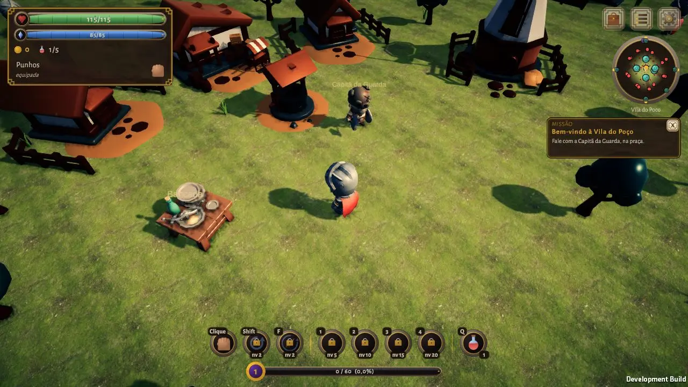
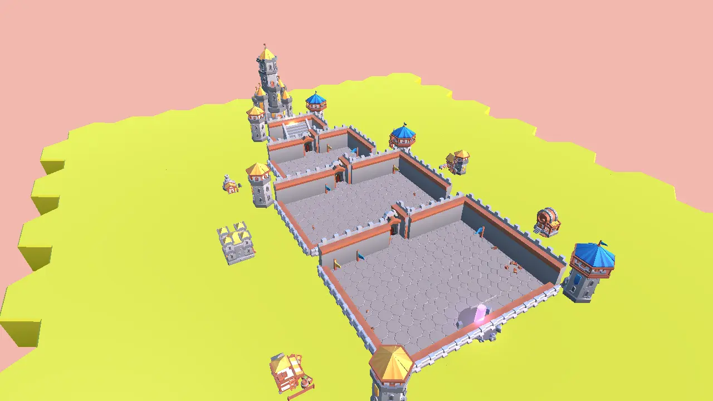
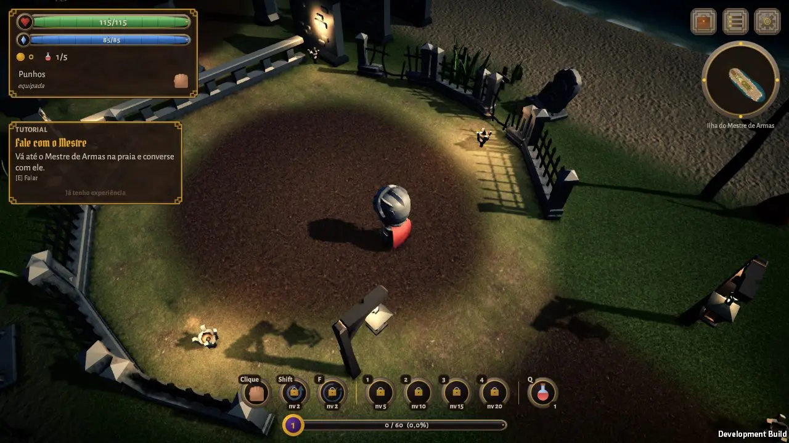
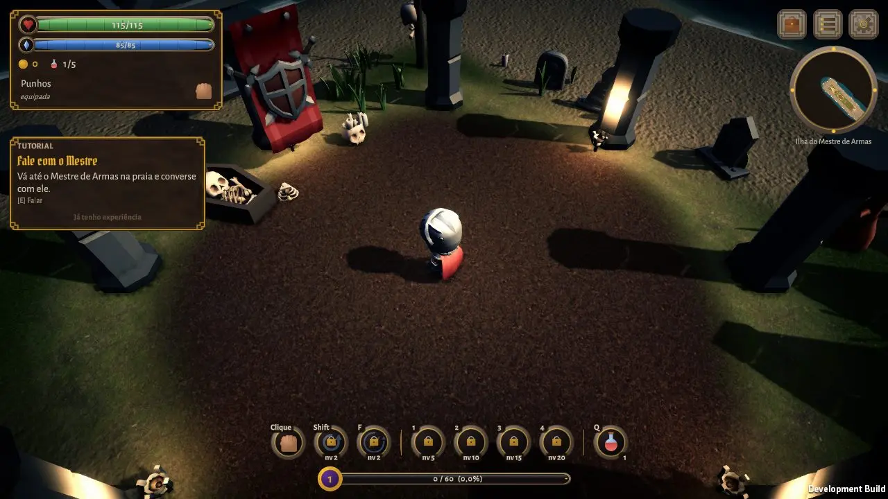
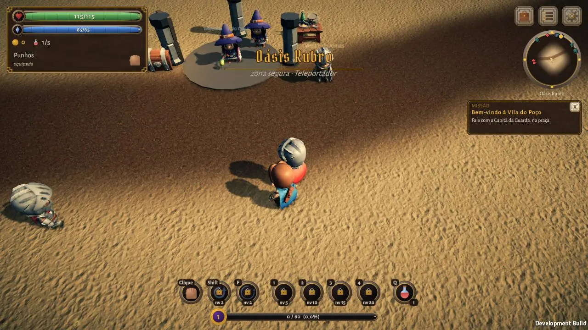
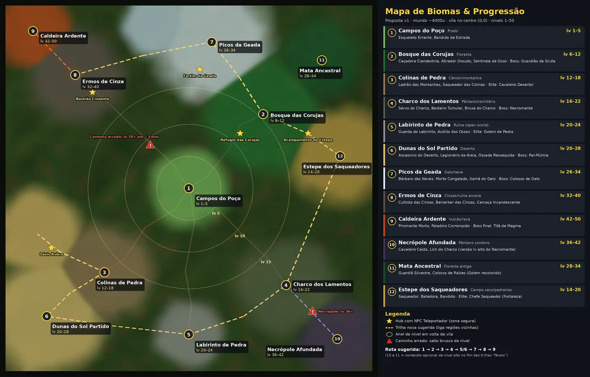

O multiplayer está em playtest fechado. O jogo inteiro funciona offline, sem conta.
Capítulo I
A Idade das Asas
Antes dos reinos, o céu tinha donos. Os Senhores do Alto pousavam e a pedra virava vidro. Os povos pagavam tributo em gado, em ouro e, nos anos ruins, em gente.
Os Antigos se recusaram a pagar. Não eram mais fortes. Eram mais pacientes. Descobriram que um Senhor do Alto não se mata — o fogo só muda de lugar. Mas tudo o que vive também dorme.
Então escreveram uma canção de ninar. Cada palavra, guardada nos Grimórios, cobrou de quem escreveu um pedaço do corpo: anos, a cor dos olhos, a mão. A magia deste mundo nunca foi de graça.
A Balada dos Mil Antigos — cantada nas tavernas de Aurora
Eram mil os velhos bravos, mil escudos, mil canções, e o céu, que ardia em asas, viu cair os seus dragões.
Ergue o copo aos mil Antigos, que o bardo não sabe mentir! (E quem diz que eram só poucos paga a rodada e vai dormir.)
Dos livros da Vila do Poço
Os Antigos eram poucos e pacientes, e não mataram dragão nenhum. Fizeram eles dormirem — e pagaram com o próprio corpo.
No jogo, cada balada tem um livro par. Quem junta os dois descobre o que realmente aconteceu.
Capítulo II
A Vila do Poço
Toda história começa numa vila pequena com um poço no meio. As crianças brincam na praça, a Capitã da Guarda conta as lanças, os moradores puxam água como se fosse um dia qualquer.
Ninguém lembra quem cavou o poço. Os velhos dizem que ele não foi cavado: foi deixado, como uma porta que alguém esqueceu aberta ao ir embora.
E há a Lúmen, uma luz pequena que mora numa lanterna e não gosta do escuro de lá de baixo. Dizem que a lua mandou ela para vigiar alguma coisa.
Mas, de uns tempos para cá, os acampamentos ao redor da vila voltaram a se mover à noite…

A Vila do Poço, ponto de partida do mundo aberto.
A canção de puxar balde
Uma avó cantava isto enquanto puxava o balde, e parava sempre no mesmo verso.
Desce a corda, desce a luz,
desce o nome que ninguém diz;
quem lá embaixo acende a lua
volta sem sombra — e mais feliz.
▮▮▮▮ ▮ ▮▮▮▮▮▮, ▮▮▮▮ ▮ ▮▮▮…
Ela dizia que a canção acabava ali. Mentia. Quem quiser ouvir o resto, que desça com luz própria.
Capítulo III
O que dorme
Os esqueletos dos acampamentos não andam como mortos comuns. Andam num ritmo, como se alguém os estivesse sonhando em movimento.
“Dorme, e os ossos obedecem.”
É o que repete quem sobreviveu. Ninguém sabe o que dorme. Quem sabe não diz o nome — porque dizer em voz alta é o que acorda.
O nome:
Toda magia cobra. Esta cobra um ano.
No fundo da Gruta das Raízes, um Guardião de pedra vigia um Grimório fechado. Ele não é a ameaça. Ele é a tranca.
O que acontece quando a tranca cai, os livros não contam. Você vai ter que descer.
Dois reinos. Um juramento.

A superfície · a Coroa
Coroa de Aurora
Os que ficaram em cima ergueram uma muralha branca com bestas de ferro e cobraram o Dízimo do Céu para que ela nunca caísse. O dragão sumiu. O dízimo ficou.
O Rei quer a guerra. Acha que Nocturna esconde alguma coisa.
O subterrâneo · a Cidade Velada
Nocturna
Os que desceram para a caverna gigante fugindo do fogo — e todo exilado depois deles. Vive de lanternas lunares e de favores.
O Regente usa um véu. Dizem que ele escuta alguma coisa lá embaixo.
No nível 20 você jura a um dos dois. Dá para trocar uma vez só — e trocar tem nome: traição.
Jogabilidade
Escolha como lutar
Combate de ação em visão isométrica: combo de três golpes, esquiva perfeita, ultimate e cada golpe validado no servidor. Cada classe tem a própria esquiva.
Cavaleiro
Esquiva
Arma inicial
Passiva
12 regiõesCampo, deserto, geada, cinzas, vulcão, pântanos, necrópole… do nível 1 ao 100, e o herói vai até o 500.
Chefes com fasesInvestidas, ajudantes, sala de recompensa e uma Gruta gerada para ser explorada.
Economia por cidadeCada cidade tem caixa, imposto e preço que sobe e desce. Forja, conserto, encantamento e alquimia.
Guildas e loreTrês guildas, livros para ler no jogo, pedras rúnicas e ecos antigos que fortalecem a ultimate.

Ilha do Mestre de Armas

A arena do primeiro chefe

Oásis Rubro, no deserto
O mapa que você ainda não andou
Passe o dedo ou o mouse para afastar a névoa de algumas regiões. O mapa inteiro só aparece andando.

Primeiros passos
Tutoriais
O jogo ensina tudo na Ilha do Mestre de Armas, sem travar ninguém. Aqui vai o resumo para quem quer chegar sabendo.
1A Ilha do Mestre de Armas
Siga os anéis no chão: eles mostram o próximo passo.
Abra o baú, enfrente a arena dos esqueletos e compre a primeira arma.
Derrote o Guardião da ilha. Já sabe jogar? Dá para pular o tutorial desde o começo.
2Combate e esquiva
Ataque em sequência para o combo de três golpes. Dá para atacar andando.
Esquive no último instante: a esquiva perfeita abre espaço para o contra-ataque.
Encha a barra de Fúria, Foco ou Mana e solte a ultimate.
3Mochila e equipamento
Tecla I (ou o botão da mochila) abre o inventário.
Vista peças de cabeça, peito, mãos, pés, anel e amuleto. O tier muda a cor da peça.
Coloque arma ou poção na barra de atalhos (teclas 1–4).
4Mercado e bancada
Cada cidade tem preço próprio: compre barato num hub e venda em outro.
Na bancada: forjar, consertar, encantar, desencantar e fazer alquimia.
O imposto vai para o tesouro da cidade — e o tesouro acaba.
5Mapa e Teleportador
Chegue perto de um hub para liberá-lo no mapa.
Fale com o Teleportador para viajar entre hubs liberados.
Dentro da zona segura, os monstros não miram você.
6Grupo e missões
Comece pela Capitã da Guarda, na Vila do Poço.
O diário de missões e o “próximo objetivo” na tela mostram para onde ir.
Monte um grupo para dividir a caçada (online).
7Reinos e reputação
No nível 20, jure a Aurora ou a Nocturna.
Contratos diários sobem a reputação e abrem portas da capital.
Fortalezas trocam de dono na guerra de território semanal.
8Constelações e progresso
Abra o botão Céu para investir atributos nas constelações.
Morrer custa XP — as bênçãos amenizam.
Fora do jogo, o herói descansa e ganha XP descansado.
Evento de servidor
O Despertar
A terra treme sob a Vila do Poço.
De tempos em tempos, o que dorme se mexe. O servidor inteiro é avisado. Os esqueletos do mundo se levantam mais fortes. E os heróis descem juntos.
Multiplayer em playtest fechado. Qualquer um pode jogar o modo offline. O acesso online, por enquanto, é só para quem está no playtest — quer entrar? Escreva para nós.
Mande um corvo
Dúvida, bug, vontade de entrar no playtest ou só dizer o que achou da história? Escreva para a gente.